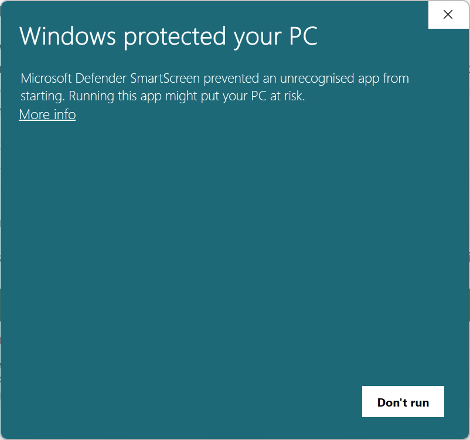
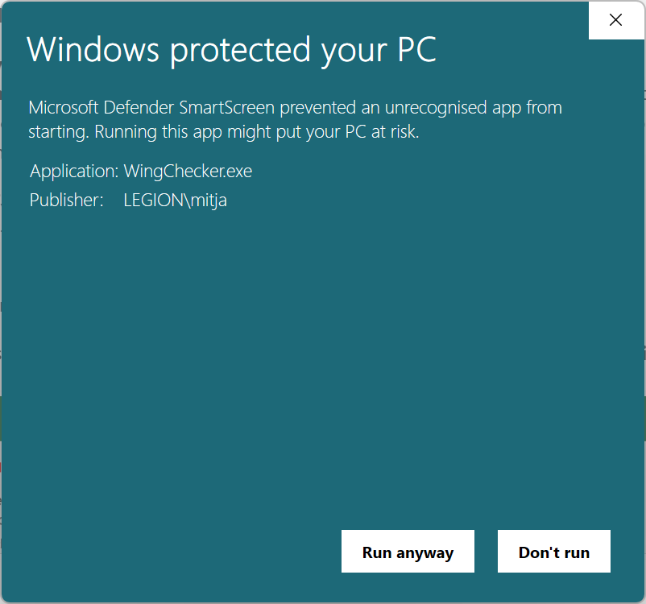
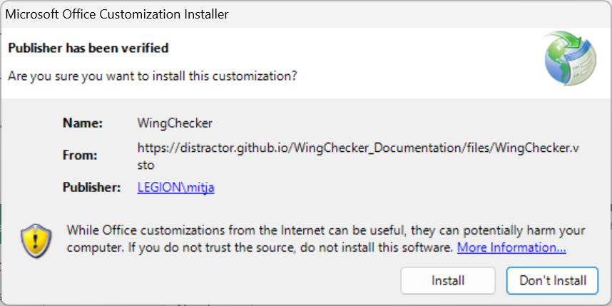

Installation
Requirements:
- Windows operating system
- Installed Microsoft Office Excel
- Internet connection
Warning
Since this is not a native Windows application, you must install a digital code certificate before installing the Add-in. See instructions below.
Install
Installation guide
An installation script was prepared as part of the development process. You can download the installation script here or click on the button below
Once downloaded, right-click on the file and select Run as Administrator. This will:
- Download and install the digital code certififcate and
- Download and install the WingChecker AddIn.
Common Installation Prompts
Since this is not a native Windows application, your operating system might warn you before running the installation script. 
{kind=link}
If that happens, click on More info and select Run anyway. 
{kind=link}
Installation prompt will pop up. Select Install and wait untill the installation process is completed. 
{kind=link}
To manually install the WingChecker VSTO Excel Add-in follow these steps:
-
Download the Installer: You can download the installer file from here.
Install the Digital Code Certificate
- Right-click on the downloaded WingChecker.exe and select Properties.
- In the top menu, select Digital Signatures.
-
From the Signature list, select the digital signature named
LEGION\mitjaand click on Details. -
A new window opens. Click on View Certififcate.
-
In a new window select Install Certificate.
-
Certificate installation wizzard opens. Select Current User and click Next.
-
Warning! This step is very important for successful installation.
Select Place all certififcates in the following store, then click Browse and look for Trusted People. Select OK and click Next.
-
Select Finish and wait for success message.
-
Close all windows oppened in the proccess.
{kind=link}
{kind=link}
{kind=link}
{kind=link}
{kind=link}
{kind=link}
Install AddIn
- Run the installer: Double-click on the downloaded installer to start.
-
Follow the Installation Prompts: Accept any warnings or prompts from your operating system and wait for the installation to complete.
Verify installation
To verify installation:
- Launch a New Excel Instance: Open a new Excel workbook.
If the installation was successful, the WingChecker Add-in will be visible in the Add-ins tab of the Excel ribbon.
{kind=link}
Update
Excel checks for an update every time you launch a new instance. If a new version of WingChecker is available, it will automatically install it.
Uninstall
To uninstall the WingChecker VSTO Excel Add-in, follow these steps:
- Access the Control Panel: Open the Control Panel on your Windows system.
- Locate Add/Remove Programs: Find and click on the "Add or Remove Programs" option.
- Uninstall WingChecker: Locate "WingChecker" in the list of installed programs and click the "Uninstall" button.
Info
If you encounter any issues during the installation or uninstallation process, please refer to our support team.